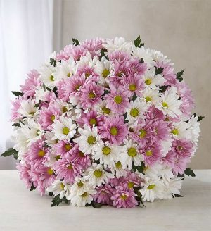
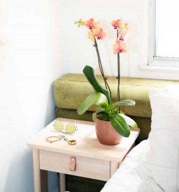
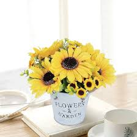

Mar de Flores la componen un grupo de profesionales formados por paisajistas, biólogos y floristas amantes de la naturaleza y con un gusto especial para la realización de pedidos florales, sean de la índole que sea. Nuestro trabajo se basa en una idea de decoración floral rica y armoniosa, respetando los excepcionales productos que recibimos directamente de los mercados holandeses; flores y plantas de temporada que nos permiten realizar creaciones originales y competir en precio, calidad y frescura.
Las margaritas se encuentran en todos los continentes excepto en la Antártida y pertenecen a una de las familias de plantas más grandes que se conocen.
¿Sabía que las orquídeas son una de las plantas con flores más antiguas conocidas por el hombre? Los científicos han especulado que las orquídeas existen desde hace 100 millones de años.
Los girasoles son uno de los tipos de flores más populares y son más conocidos por su deslumbrante color amarillo y su gran tamaño.
¿Alguna vez te has preguntado cómo teñir flores secas? ¡No busques más! Hoy te vamos a explicar cómo transformar tus flores secas en auténticas obras de arte para decorar tu casa o hacer manualidades originales. Además, te contaremos qué tipos de flores se pueden teñir, qué tinta se usa y cómo se realiza todo el proceso.
Las hortensias son flores muy agradecidas y versátiles, perfectas para darle un toque de color a todo tipo de arreglos florales. Hoy te vamos a dar ideas de centros de flores con hortensias para que los combines con otras flores. Cumpleaños, bodas, nacimientos, cenas de empresa, … ¡Decora tu evento con los mejores centros florales!
¿Quieres saber cómo limpiar flores preservadas? Al estar tratadas con soluciones especiales que reemplazan la savia natural, estas flores mantienen su frescura durante meses o, incluso, años. Sin embargo, al igual que las flores frescas, las flores preservadas también necesitan cuidados y un mantenimiento continuado para conservar su belleza a lo largo del tiempo. Sigue leyendo si quieres aprender algunos trucos útiles para mantener tus flores en las mejores condiciones.